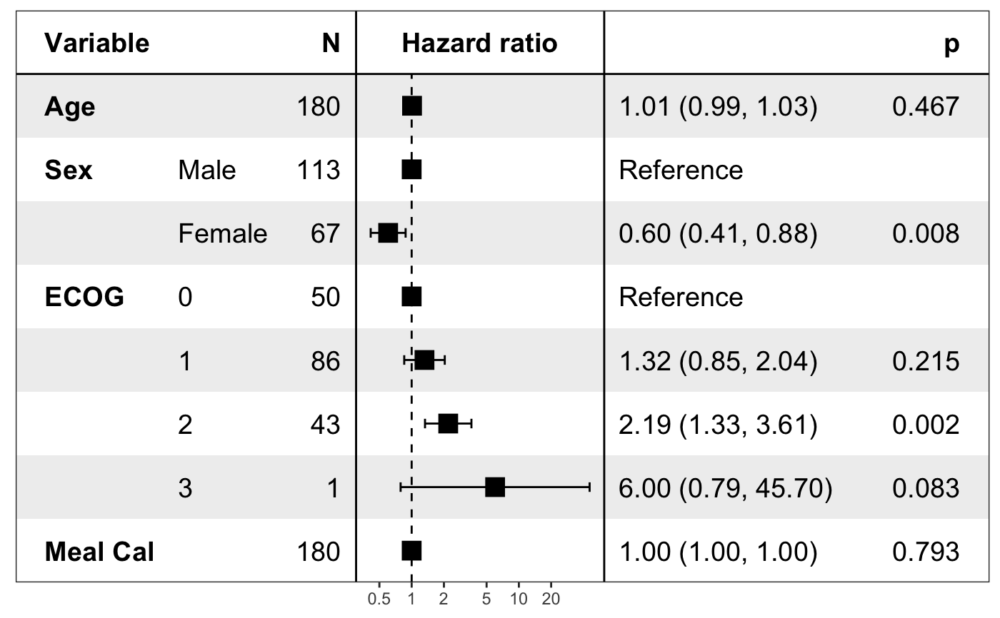
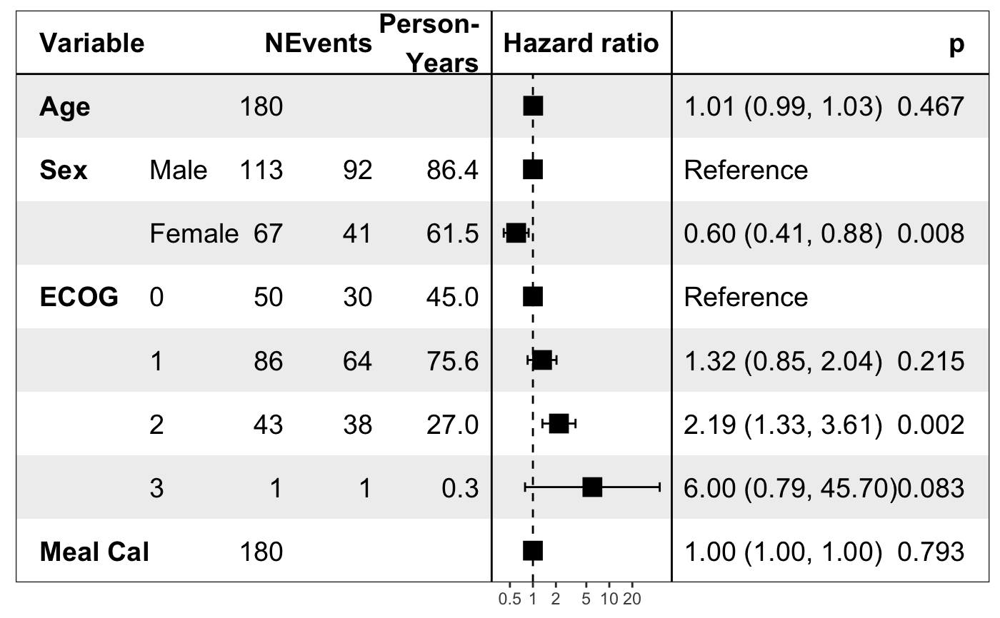
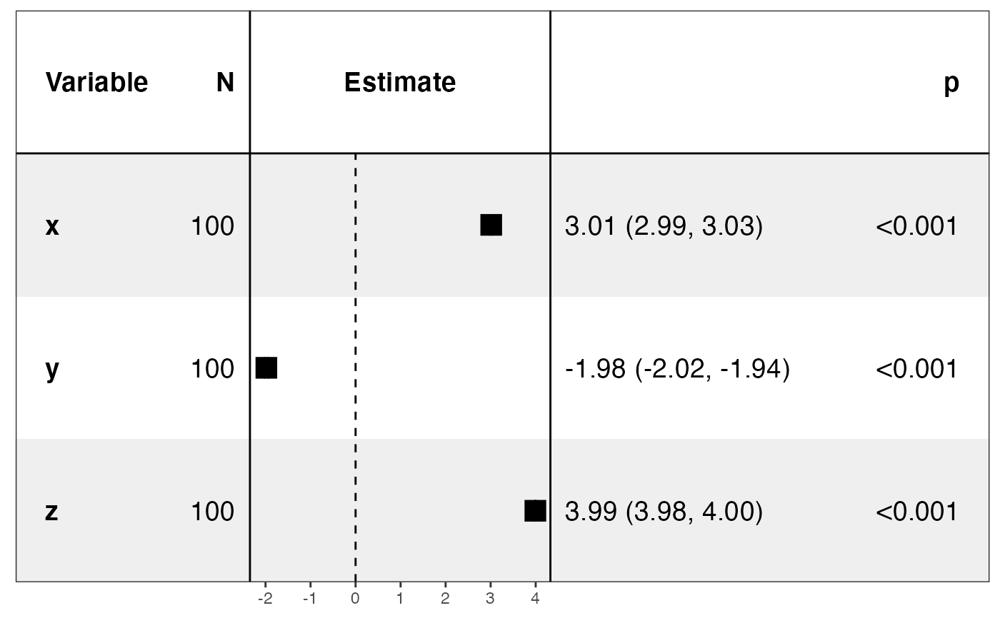
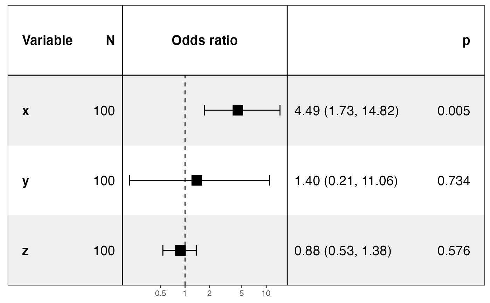

forest_model.RdProduce a forest plot based on a regression model
forest_model( model, panels = default_forest_panels(model, factor_separate_line = factor_separate_line), covariates = NULL, exponentiate = NULL, funcs = NULL, factor_separate_line = FALSE, format_options = forest_model_format_options(), theme = theme_forest(), limits = NULL, breaks = NULL, return_data = FALSE, recalculate_width = TRUE, recalculate_height = TRUE, model_list = NULL, merge_models = FALSE, exclude_infinite_cis = TRUE, show_global_p = c("none", "bottom", "aside") )
| model | |
|---|---|
| panels |
|
| covariates | a character vector optionally listing the variables to include in the plot (defaults to all variables) |
| exponentiate | whether the numbers on the x scale should be exponentiated for plotting |
| funcs | optional list of functions required for formatting |
| factor_separate_line | whether to show the factor variable name on a separate line |
| format_options | formatting options as a list as generated by |
| theme | theme to apply to the plot |
| limits | limits of the forest plot on the X-axis (taken as the range of the data by default) |
| breaks | breaks to appear on the X-axis (note these will be exponentiated
if |
| return_data | return the data to produce the plot as well as the plot itself |
| recalculate_width |
|
| recalculate_height |
|
| model_list | list of models to incorporate into a single forest plot |
| merge_models | if `TRUE`, merge all models in one section. |
| exclude_infinite_cis | whether to exclude points and confidence intervals
that go to positive or negative infinity from plotting. They will still be
displayed as text. Defaults to |
| show_global_p | Show model global p value, only works for Cox model. - 'none', don't show. - 'bottom', show global p value in the bottom. - 'aside', show global p value along with 'Reference', this is useful when you plot a list of models. |
A ggplot ready for display or saving, or (with return_data == TRUE,
a list with the parameters to call panel_forest_plot in the
element plot_data and the ggplot itself in the element plot)
This function takes the model output from one of the common model functions in
R (e.g. lm, glm,
coxph). If a label attribute was present on any of the
columns in the original data (e.g. from the labelled package),
this label is used in preference to the column name.
The panels parameter is a list of lists each of which have an element
width
and, optionally, item, display, display_na,
heading, hjust and fontface. item can be "forest" for the forest
plot (exactly one required) or "vline" for a vertical line.
display indicates which column to display as text. It can be a quoted variable name
or a formula. The column display can include the standard ones produced by
tidy and in addition
variable (the term in the model; for factors this is the bare variable without the level),
level (the level of factors),
reference (TRUE for the reference level of a factor). For coxph
models, there will also be n_events for the number of events in the group with
that level of the factor and person_time for the person-time in that group.
The function trans is definded to be the
transformation between the coefficients and the scales (e.g. exp). Other functions not
in base R can be provided as a list with the parameter funcs.
display_na allows for an alternative display for NA terms within estimate.
#> #>#> #> #>#> #> #>pretty_lung <- lung %>% transmute(time, status, Age = age, Sex = factor(sex, labels = c("Male", "Female")), ECOG = factor(lung$ph.ecog), `Meal Cal` = meal.cal ) print(forest_model(coxph(Surv(time, status) ~ ., pretty_lung)))#> Warning: Unable to resize forest panel to be smaller than its heading; consider a smaller text size# Example with custom panels panels <- list( list(width = 0.03), list(width = 0.1, display = ~variable, fontface = "bold", heading = "Variable"), list(width = 0.1, display = ~level), list(width = 0.05, display = ~n, hjust = 1, heading = "N"), list(width = 0.05, display = ~n_events, width = 0.05, hjust = 1, heading = "Events"), list( width = 0.05, display = ~ replace(sprintf("%0.1f", person_time / 365.25), is.na(person_time), ""), heading = "Person-\nYears", hjust = 1 ), list(width = 0.03, item = "vline", hjust = 0.5), list( width = 0.55, item = "forest", hjust = 0.5, heading = "Hazard ratio", linetype = "dashed", line_x = 0 ), list(width = 0.03, item = "vline", hjust = 0.5), list(width = 0.12, display = ~ ifelse(reference, "Reference", sprintf( "%0.2f (%0.2f, %0.2f)", trans(estimate), trans(conf.low), trans(conf.high) )), display_na = NA), list( width = 0.05, display = ~ ifelse(reference, "", format.pval(p.value, digits = 1, eps = 0.001)), display_na = NA, hjust = 1, heading = "p" ), list(width = 0.03) ) forest_model(coxph(Surv(time, status) ~ ., pretty_lung), panels)#> Warning: Unable to resize forest panel to be smaller than its heading; consider a smaller text sizedata_for_lm <- tibble( x = rnorm(100, 4), y = rnorm(100, 3, 0.5), z = rnorm(100, 2, 2), outcome = 3 * x - 2 * y + 4 * z + rnorm(100, 0, 0.1) ) print(forest_model(lm(outcome ~ ., data_for_lm)))data_for_logistic <- data_for_lm %>% mutate( outcome = (0.5 * (x - 4) * (y - 3) * (z - 2) + rnorm(100, 0, 0.05)) > 0.5 ) print(forest_model(glm(outcome ~ ., binomial(), data_for_logistic)))